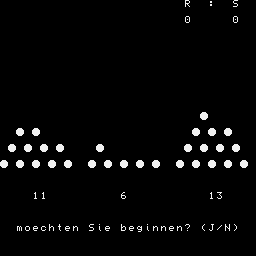

KOMBINATIONSSPIEL
━━━━━━━━━━━━━━━━━━━
Wer nimmt den letzten Stein?
Es bestehen 3 Haufen mit einer
vom Rechner zufaellig festgelegten
Anzahl von Steinen.
Sie und der Rechner duerfen nun
abwechselnd eine beliebige Anzahl
von Steinen von einem beliebigen
Haufen wegnehmen
(mindestens einen, max. alles).
Es verliert derjenige, der den
letzten Stein nehmen muss!
100!***************************
120!* KOMBINATIONSSPIEL *
140!* ---TRIPLETT--- *
160!* Copyrights by *
180!* Rainer Brosig IHD *
200!***************************
210!
220 WINDOW:L=Q*PI/4*PEEK(862)+102:IF PEEK(L)<>201 THEN POKE L,201:DOKE L+1,Q
240 KZ=1:!KENNZAHL 1=SPIELER 0=RECHNER
260 CLS
270 PRINT
280 PRINT " KOMBINATIONSSPIEL"
290 PRINT " "
300 PRINT:PRINT "Wer nimmt den letzten Stein?"
310 PRINT
320 PRINT "Es bestehen 3 Haufen mit einer":PRINT
330 PRINT "vom Rechner zufaellig festge_":PRINT
340 PRINT "legten Anzahl von Steinen. ":PRINT
350 PRINT "Sie und der Rechner duerfen nun":PRINT
360 PRINT "abwechselnd eine beliebige An-":PRINT
370 PRINT "zahl von Steinen von einem be-":PRINT
380 PRINT "liebigen Haufen wegnehmen":PRINT
390 PRINT "(mindestens einen, max. alles).":PRINT
400 PRINT "Es verliert derjenige, der den":PRINT
405 PRINT "letzten Stein nehmen muss!":PRINT AT(30,24);">ENTER<"
407 PRINT:PRINT:PRINT:PRINT:PRINT:PRINT
410 A=INT(10*RND(1)+6)
420 B=INT(10*RND(1)+6)
430 C=INT(10*RND(1)+6):!HAUFEN SETZEN
440 IF A=B OR A=C OR B=C THEN 410:!NUR UNGLEICHE HAUFEN
450 BG$=INKEY$ :!ABFRAGE ENTER
460 IF BG$<>CHR$(13) THEN 450
470 CLS:WINDOW 0,3,0,21:PRINT AT(0,0);" "
480 GOSUB 2020:PRINT AT(0,23);"R : S":PRINT AT(2,22);PEEK(L+1):!SPIELSTAND
490 PRINT AT(2,28);PEEK(L+2):POKE L+1,PEEK(L+1)+1:!JEDES ABGEBR.SPIEL=VERLO.
500 PRINT AT(28,2);"moechten Sie beginnen? (J/N)"
510 BG$=INKEY$ :!Y/N ABFR.
520 IF BG$="J" THEN 540
530 IF BG$="N" THEN 930:ELSE GOTO 510
540 PRINT AT(28,0);" "
550 GOSUB 2020
560 PRINT AT(28,0);" "
570 PRINT
580 PRINT
590 IF KZ=0 THEN PRINT AT(28,2);"NACH RECHNERZUG:"
600 PRINT "Wieviele Steine von "
602 PRINT AT(26,2);" "
604 INPUT "Haufen(1,2,3):";AN,HA
610 IF AN<1 THEN GOSUB 1770:GOTO 550
620 IF (AN-INT(AN))<>0 THEN GOSUB 1770:GOTO 550:!FEHLER WENN EING<1 O.GEBR.
630 PRINT AT(28,2);" "
640 ON HA GOTO 670,810,870
650 GOSUB 1770:!FERLERAUSG. 1
660 GOTO 550
670 D=A:A=A-AN
680 IF A<0 THEN 710
690 GOSUB 1530:GOTO 940
700 KZ=1
710 A=D
720 GOSUB 740
730 GOTO 550
740 INK 2:!UP FEHLERAUSG. 2
750 PRINT AT(28,0);"so viele Steine liegen nicht da!"
780 PAUSE(30)
790 INK 7
800 RETURN
810 E=B:B=B-AN
820 IF B<0 THEN 850
830 KZ=1
840 GOSUB 1530:GOTO 940
850 B=E:GOSUB 740:!FEHLER 2
860 GOTO 550
870 F=C:C=C-AN
880 IF C<0 THEN 910
890 KZ=1
900 GOSUB 1530:GOTO 940
910 C=F:GOSUB 740
920 GOTO 550
930 PRINT AT(21,4);" "
940 K1=8:K3=0:K9=8:K7=0
950 D=A:E=B:F=C
960 K8=0:KF=8:K0=3
970 IF C>=8 THEN K2=6:C=C-8:K8=K8+1
980 IF B>=8 THEN K2=5:B=B-8:K8=K8+1
990 IF A>=8 THEN K2=4:A=A-8:K8=K8+1
1000 GOTO 1010
1010 K8=K8+1
1020 ON K8 GOTO 1040,1090,1040,1030
1030 K7=K7+K1
1040 K9=K9-2
1050 IF K9=0 THEN 1160
1060 A=A*2:B=B*2:C=C*2
1070 K1=K1/2
1080 GOTO 960
1090 IF K3=0 THEN 1140
1100 KF=K3
1110 IF KF=K2 THEN 1030
1120 K7=K7-K1
1130 GOTO 1040
1140 K3=K2
1150 GOTO 1030
1160 IF K7=0 THEN GOSUB 1840
1170 IF K3>0 THEN K2=K3
1180 K0=0:KF=2
1190 IF D>=2 THEN K0=K0+5:ELSE K0=K0+D
1200 IF E>=2 THEN K0=K0+5:ELSE K0=K0+E
1210 IF F>=2 THEN K0=K0+5:ELSE K0=K0+F
1220 K2=K2-3
1230 ON K2 GOTO 1240,1260,1280
1240 IF D>=2 THEN K0=K0-5:ELSE K0=K0-D
1250 GOTO 1290
1260 IF E>=2 THEN K0=K0-5:ELSE K0=K0-E
1270 GOTO 1290
1280 IF F>=2 THEN K0=K0-5:ELSE K0=K0-F
1290 KF=3
1300 IF K0>=KF THEN 1430
1310 KH=K0+1
1320 ON KH GOTO 1370,1330,1370
1330 IF K2=1 THEN K7=D
1340 IF K2=2 THEN K7=E
1350 IF K2=3 THEN K7=F
1360 GOTO 1430
1370 ON K2 GOTO 1380,1400,1420
1380 IF D-1=0 THEN K7=1:ELSE K7=D-1
1390 GOTO 1430
1400 IF E-1=0 THEN K7=1:ELSE K7=E-1
1410 GOTO 1430
1420 IF F-1=0 THEN K7=1:ELSE K7=F-1
1430 IF K2=1 THEN D=D-K7
1440 IF K2=2 THEN E=E-K7
1450 IF K2=3 THEN F=F-K7
1460 A=D:B=E:C=F
1470 KZ=0
1480 IF A=0 AND B=0 AND C=0 THEN 1610
1490 IF A=1 AND B=0 AND C=0 THEN KZ=ABS(KZ-1):GOTO 1610
1500 IF A=0 AND B=1 AND C=0 THEN KZ=ABS(KZ-1):GOTO 1610
1510 IF A=0 AND B=0 AND C=1 THEN KZ=ABS(KZ-1):GOTO 1610
1520 GOTO 550
1530 GOSUB 2020
1540 IF A=0 AND B=0 AND C=0 THEN 1610
1550 IF A=1 AND B=0 AND C=0 THEN KZ=ABS(KZ-1):GOTO 1610
1560 IF A=0 AND B=1 AND C=0 THEN KZ=ABS(KZ-1):GOTO 1610
1570 IF A=0 AND B=0 AND C=1 THEN KZ=ABS(KZ-1):GOTO 1610
1580 GOSUB 2020
1590 PRINT AT(26,4);"RECHNERZUG"
1600 RETURN
1610 GOSUB 2020:WINDOW:CLS
1620 PRINT
1630 PRINT
1640 IF KZ=1 THEN 1710
1650 PRINT "Herzlichen Glueckwunsch zu Ihrem"
1660 PRINT "Sieg! Anscheinend kennen Sie das"
1670 PRINT "System."
1680 PRINT:PRINT
1690 PRINT "Ich fordere Revanche!"
1700 PAUSE(40):POKE L+1,PEEK(L+1)-1:POKE L+2,PEEK(L+2)+1:GOTO 260
1710 PRINT " Schade..."
1720 PRINT
1730 PRINT "Man muss halt ein bisschen nach-"
1740 PRINT "denken!":PRINT
1750 PRINT "Aber versuchen Sie es ruhig noch"
1760 PRINT "einmal!":PAUSE(40):GOTO 260
1770 INK 2:!UP FEHLER 1
1780 PRINT CHR$(6)
1790 PRINT
1800 PRINT "EINGABEFEHLER!"
1810 PAUSE(30)
1820 INK 7
1830 RETURN
1840 IF D<=3 AND E<=3 AND F<=3 THEN K7=1:RETURN
1850 Z=INT(RND(1)*3+1)
1860 ZZ=INT(RND(1)*3+1)
1870 ON Z GOTO 1880,1900,1920
1880 IF D>=3 THEN K7=0:D=D-ZZ:ELSE GOTO 1840
1890 RETURN
1900 IF E>=3 THEN K7=0:E=E-ZZ:ELSE GOTO 1840
1910 RETURN
1920 IF F>=3 THEN K7=0:F=F-ZZ:ELSE GOTO 1840
1930 RETURN
1940 X2=-1
1950 FOR I=20 TO 10 STEP-2
1960 X2=X2+1
1970 FOR J=0 TO 4-(20-I)/2
1980 IF X1>0 THEN A$=CHR$(207) :ELSE A$=" "
1990 PRINT AT(I,J*2+X3+X2);A$:X1=X1-1
2000 NEXT J,I
2010 RETURN
2020 X1=A:X3=0:GOSUB 1940:PRINT AT(24,3);A
2030 X1=B:X3=11:GOSUB 1940:PRINT AT(24,14);B
2040 X1=C:X3=22:GOSUB 1940:PRINT AT(24,25);C
2050 RETURN